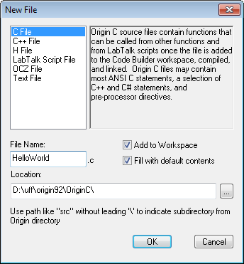
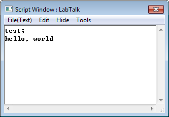

int test() { printf("hello, world\n"); // テキストを出力する printf 関数 の呼び出し // \n は改行を表す return 0; // 関数を抜け、呼び出し元に0を返す }

Origin Cは、ANSI Cプログラミング言語に密接に基づいた高度なプログラミング言語です。Origin Cは クラス、ストリーム内での変数宣言、オーバーロード関数、参照、デフォルトの関数引数などを含む多くのC++の機能をサポートしています。 Origin Cは、C#プログラミング言語からコレクションおよび foreach と using ステートメントをサポートしています。
Origin Cプログラムは、コードビルダというOriginの開発環境(IDE)で開発されます。コードビルダには、シンタックスのハイライト、ワークスペースウィンドウ、コンパイラ、リンカ、デバッガを持つソースコードのエディタを含んでいます。詳細は、ヘルプ：プログラミング:コードビルダを確認してください。
Origin Cを使うと、Originのデータインポートと取り扱い、グラフ作成、分析、イメージエクスポート機能など完全に制御することができます。Origin Cで作成したアプリケーションは、Originのスクリプト言語であるLabTalkより高速に実行します。
このチュートリアルは、Origin C関数を作成するコードビルダを使用して、Originから関数にアクセスする方法を示しています。関数自体はとても単純ですが、ここで提供されているステップは、Origin C関数の記述を始める手助けとなります。
int test() { printf("hello, world\n"); // テキストを出力する printf 関数 の呼び出し // \n は改行を表す return 0; // 関数を抜け、呼び出し元に0を返す }
|
Origin Cファイルが問題なくコンパイルリンクされると、ファイル内で定義したすべての関数は、LabTalkスクリプトをサポートしているOrigin内のどこからでもスクリプトコマンドとして呼び出すことができます。関数パラメータおよび戻り値は、スクリプトからアクセス可能なある基準を満たす必要があり、そのような関数を常に使用可能にする手法があります。詳細については、LabTalkヘルプファイルのLabTalkプログラミング:LabTalkガイド:XファンクションおよびOrigin C関数の呼び出し： Origin C関数の章をご覧ください。このヘルプファイルはOriginのヘルプ:プログラミング:LabTalk メニューからアクセスできます。 |